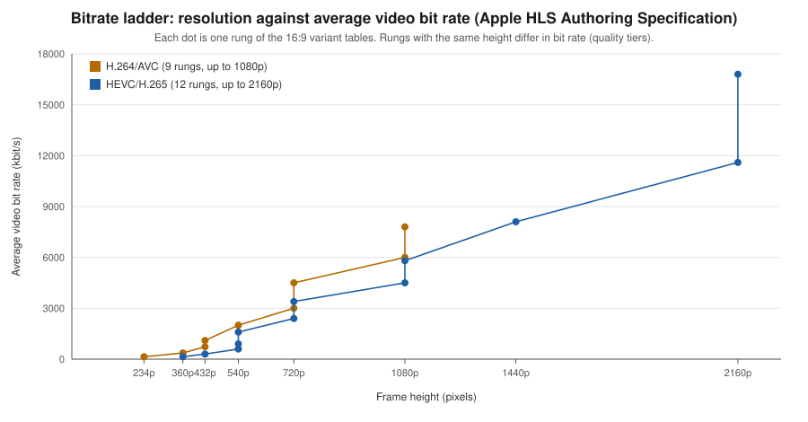

Video Encoding Fundamentals
|
This content was generated with the assistance of AI and should be verified against the official documentation before being relied on in production. |
Baseline date: 2026-10-07. Users upload video in whatever format their device produced: HEVC in a MOV container from an iPhone, H.264 in MP4 from an Android phone, VP9 in WebM from a screen recorder. A platform has to produce a set of renditions that every device can play, at sizes that fit every connection. This page covers the building blocks. The bitrate values in the ladder table below were copied from the HLS Authoring Specification for Apple Devices as it stood on the baseline date.
Codecs
| Codec | Strengths | Weaknesses | Licensing and support |
|---|---|---|---|
H.264 / AVC |
Plays on practically every device and browser. Hardware decoders everywhere. Fast to encode. |
Needs about twice the bit rate of newer codecs for the same quality. |
Patent pool (MPEG LA, now Via LA). Streaming free content is generally not charged for, but check your case. Encoder: x264 (GPL). |
H.265 / HEVC |
Roughly 30 to 50 percent smaller than H.264 at the same quality. Native on Apple devices. |
Patchy browser support outside Safari. Several patent pools with unclear terms. |
Encoder: x265 (GPL, commercial licence available). Often shipped only to Apple clients. |
VP9 |
Royalty-free, supported in Chrome, Firefox and Edge and Android. Often used in WebM. |
Slow encode, limited hardware support on Apple devices, weaker than AV1. |
Royalty-free. Encoder: libvpx. |
AV1 |
Best compression of the four, royalty-free, supported in current major browsers and a growing number of hardware decoders. |
Slow to encode in software. Many older devices decode it in software only. |
Royalty-free (AOMedia). Encoders: SVT-AV1, libaom, rav1e. |
A common production set is H.264 for every device, plus HEVC for Apple clients, or AV1 for clients that report support. Choose per audience, not per fashion. Check the baseline for the target clients on the MDN video codec guide before you drop the H.264 fallback.
Containers
- MP4
-
The universal container for H.264, HEVC and AV1 with AAC audio. A normal MP4 stores its index (
moovatom) at the end of the file, so a player cannot start until it has the whole file, unless it was written with the index first (faststart, below). - WebM
-
A Matroska subset for VP8, VP9 and AV1 with Vorbis or Opus audio. Plays in current desktop browsers and on Android. Check Safari and iOS support for your target versions before relying on it.
- Fragmented MP4 (fMP4) and CMAF
-
The file is split into independently decodable fragments. HLS and DASH both accept fMP4 segments. CMAF is a profile of fMP4 so that one set of segments serves both protocols, see video streaming.
- MPEG-TS
-
The original HLS segment container. Still accepted, but fMP4 is preferred for new work.
Rate control
- CRF (constant rate factor)
-
The encoder holds visual quality constant and lets the bit rate vary with the scene. Lower is better quality. Good starting points: x264 around 21 to 23, x265 around 24 to 28, SVT-AV1 around 30 to 35. The scales differ per encoder, so tune by eye and with VMAF, not by copying numbers from another codec. CRF is the right choice for a single file, but its bit rate is unpredictable, which a streaming ladder cannot tolerate.
- Capped CRF (constrained quality)
-
CRF plus
-maxrateand-bufsize. Quality is constant until a scene would exceed the cap. This is the usual choice for adaptive streaming renditions. - VBR and two-pass
-
Target an average bit rate. Two-pass analyses the whole video in the first pass and spends bits where they help most in the second. It doubles encode time, and is useful when a hard size target matters.
- CBR
-
A constant bit rate wastes bits on easy scenes, so it is used for live streams and not for stored video.
- QVBR
-
AWS Elemental MediaConvert’s quality-defined variable bit rate, see MediaConvert. It is the managed counterpart of capped CRF.
The relation between resolution, bit rate and quality is not linear. A rough heuristic is that bit rate for equal quality grows with the number of pixels and with the frame rate, and shrinks with codec efficiency, so for a codec with efficiency factor (about 1 for H.264, around 0.5 to 0.7 for AV1 on typical content):
Treat this as a way to sanity check a ladder, not as a rule. The ladder table below shows the specification values, which grow slower than the pixel count because lower rungs target worse connections.
Presets, GOP and keyframes
-
Preset trades encode time for compression. x264 and x265 use names from
ultrafasttoplacebo, withmediumas the default andsloworslowercommon for stored video. SVT-AV1 uses a numeric-presetfrom 0 (slowest) to 13 (fastest). -
GOP (group of pictures) is the span between keyframes. A keyframe (IDR frame) can be decoded alone. Streaming renditions need a fixed keyframe interval, so that segment boundaries line up in every rendition and a player can switch between them. Apple’s specification says key frames (IDRs) should be present every two seconds, and that video segments must start with an IDR frame.
-
Scene-cut detection inserts extra keyframes at cuts. Disable it (
-sc_threshold 0for x264) when you need strictly aligned keyframes.
How an encoder spends its bits
A video codec does not store pictures. It stores instructions to rebuild them, and almost all of the saving comes from repeating as little as possible. Every encoder in the table above follows the same pipeline, and each rate-control knob on this page acts on one stage of it.
-
I frames are predicted only from themselves, so they are large and decodable alone. A closed GOP starts with an IDR frame, the I frame that also resets the reference buffer, which is why streaming segments must start with one.
-
P frames are predicted from earlier frames, and B frames from earlier and later ones. B frames are the smallest, and they force the encoder to reorder frames, so the decode order differs from the display order.
-
Quantisation throws away detail that the transform found small. A higher CRF quantises harder: smaller file, visible blocking and blur. Everything before that stage is lossless, and everything after it only packs the result.
Consequences for a platform: a short GOP costs bits (more I frames) but allows fast seeking and short segments, a slow preset spends more encoder time searching for better predictions, and noisy or fast-moving content is expensive however the knobs are set, because the residual is large.
Capped CRF and the rate buffer
Capped CRF adds a model of the player’s buffer to constant quality. -maxrate is the rate at which that buffer refills,
-bufsize is its size, and the encoder must never let it underflow. For a rate (maxrate) and a buffer
(bufsize), the bits produced in any time window from to are limited by:
The cap is therefore a long-run limit, not a per-second one. A buffer of two seconds of maxrate (-bufsize twice
-maxrate, the choice used on this page) lets a keyframe or a scene change burst well above -maxrate for a moment, as long
as the following seconds are cheaper. A smaller buffer squeezes the encoder harder and the quality drops at scene changes. A
larger one allows bigger bursts, which a player on a slow link feels as a stall. Apple’s guidance for VOD that peak bit rate
should stay within 200 percent of the average is the same idea expressed from the player’s side.
Worked example: the Bookshelf trailer ladder
The running example of this sub-section is the Bookshelf trailer: a 1080p, 24 fps video with a stereo track that has to be playable on a phone over a poor connection and on a TV. For the measurements below the trailer is a synthetic 20 second clip (a test pattern for ten seconds, then a fractal, so there is a hard scene cut at 10 seconds), which keeps the example reproducible without shipping a video. Real footage compresses differently, so use the numbers to read the method and not as targets.
# Source: 20 s, 1920x1080, 24 fps, AAC audio. A scene cut at 10 s.
ffmpeg -f lavfi -i "testsrc2=size=1920x1080:rate=24:duration=10" \
-f lavfi -i "mandelbrot=size=1920x1080:rate=24" \
-f lavfi -i "sine=frequency=440:duration=20" \
-filter_complex "[1:v]trim=duration=10,setpts=PTS-STARTPTS,format=yuv420p[b];[0:v]format=yuv420p[a];[a][b]concat=n=2:v=1[v]" \
-map "[v]" -map 2:a -c:v libx264 -preset veryfast -crf 18 -c:a aac -shortest trailer.mp4
ffprobe -v error -select_streams v:0 -show_entries stream=width,height,r_frame_rate,duration -of csv=p=0 trailer.mp4The probe prints 1920,1080,24/1,20.000000. The pipeline reads exactly these numbers to decide which rungs to produce, so
that it never upscales (a 720p source gets no 1080p rung) and to compute the keyframe interval from the frame rate. The
whole decision is small enough to write down:
The ladder is one encode per rung. The rungs carry no audio, because an audio track repeated in every rung is stored and cached once per rung for no benefit, and packagers expect a separate audio rendition. The loop below is what the encoding worker does, with the capped CRF values of the ladder (the 360p rung uses a slightly higher CRF because its cap is the tighter limit):
for rung in "1080 22 6000" "720 22 3000" "360 23 800"; do
set -- $rung # height, crf, maxrate in kbit/s
ffmpeg -y -i trailer.mp4 -an -vf "scale=-2:$1" \
-c:v libx264 -preset slow -crf $2 -maxrate ${3}k -bufsize $(($3 * 2))k \
-g 48 -keyint_min 48 -sc_threshold 0 -pix_fmt yuv420p -movflags +faststart ${1}p.mp4
done
ffmpeg -y -i trailer.mp4 -vn -c:a aac -b:a 128k audio.m4aMeasured on that source (ffprobe -show_entries stream=bit_rate for the bit rate, and the libvmaf filter against the
source, with the lower rungs scaled back up to 1080p for the comparison):
| Rung | Average video bit rate | VMAF against the 1080p source | Largest 2 s GOP | Comment |
|---|---|---|---|---|
1080p |
5.90 Mbit/s |
92.8 |
7.3 Mbit/s |
Close to the 6 Mbit/s cap, so the cap is working on this source. |
720p |
2.37 Mbit/s |
81.6 |
3.5 Mbit/s |
Within 80 percent of the 3 Mbit/s cap on average, with a burst at the scene cut. |
360p |
0.47 Mbit/s |
59.6 |
0.7 Mbit/s |
Far below its cap: the content is cheap at this size, and CRF 23 decides the rate, not the cap. |
Three things follow. First, a rung’s average can sit well under its cap, and then the cap does nothing: the CRF decides, so adding a cap to a rung only matters where the content gets expensive. Second, the 2 s GOP columns exceed the cap for the two larger rungs, which is allowed by the buffer equation above, and the player must be able to download the largest GOP faster than it plays. Third, VMAF falls steeply with resolution because it is measured at the 1080p viewing size. Read a low-rung score against the screen the rung is meant for, not against a TV.
# Keyframes of 720p.mp4: one every two seconds, so any 6 s segment starts on an IDR frame.
ffprobe -v error -select_streams v -skip_frame nokey -show_entries frame=pts_time -of csv=p=0 720p.mp4
# prints the timestamps 0, 2, 4, 6, 8, 10, 12, 14, 16 and 18 seconds
# VMAF of a rung against the source, after scaling the rung to the source size.
ffmpeg -i 720p.mp4 -i trailer.mp4 \
-filter_complex "[0:v]scale=1920:1080:flags=bicubic[d];[d][1:v]libvmaf=n_threads=4" -f null -The same file encoded once with each codec of the table (the commands of the section above, with the CRF values given there)
came out at 7.5 Mbit/s for H.264, 5.6 for HEVC, 7.3 for AV1 (10-bit) and 7.7 for VP9. Do not read that as a ranking: CRF
values are not comparable across encoders, and a synthetic test pattern behaves unlike a film. To compare codecs, encode your
own footage at several CRF values per codec and compare the VMAF-versus-bit-rate curves. The faststart layout is easy to
verify: ffmpeg -v trace -i output-h264.mp4 -f null - lists the top-level boxes in file order, and for the file above they
are ftyp, moov, mdat, so the index precedes the media data.
Audio
AAC-LC is the universal choice (128 kbit/s stereo is a common default). Opus is better at the same bit rate and is the usual partner of WebM and WebRTC, with growing support in MP4. Apple’s specification lists stereo AAC at 32 to 160 kbit/s. Normalise loudness during transcoding if the platform mixes content from different sources.
FFmpeg commands
FFmpeg wraps all of these encoders. Check each flag against the
FFmpeg documentation and the encoding wiki for
your build, since options depend on how FFmpeg was compiled. The commands below were run against FFmpeg 9.0.2 (the linuxserver/ffmpeg Docker image) built with libx264, libx265, SVT-AV1,
libvpx-vp9 and libopus.
# H.264 for every device. Index at the front so playback can start early.
ffmpeg -i input.mov -c:v libx264 -preset slow -crf 22 -pix_fmt yuv420p \
-c:a aac -b:a 128k -movflags +faststart output-h264.mp4-movflags +faststart moves the moov atom to the beginning of the file on the second pass over the output, which is
what lets a browser start playing an MP4 served by plain HTTP before it has the whole file.
# H.265 for Apple devices. The hvc1 tag is needed for QuickTime and Safari.
ffmpeg -i input.mov -c:v libx265 -preset medium -crf 26 -tag:v hvc1 -pix_fmt yuv420p \
-c:a aac -b:a 128k -movflags +faststart output-hevc.mp4
# AV1 with SVT-AV1, in MP4.
ffmpeg -i input.mov -c:v libsvtav1 -preset 6 -crf 32 -pix_fmt yuv420p10le \
-c:a libopus -b:a 96k output-av1.mp4
# VP9 in WebM, constant quality, single pass.
ffmpeg -i input.mov -c:v libvpx-vp9 -crf 32 -b:v 0 -row-mt 1 \
-c:a libopus -b:a 96k output-vp9.webmFor capped CRF, and for renditions that must be switchable, add the cap and a fixed keyframe interval:
ffmpeg -i input.mov -vf "scale=-2:720" -c:v libx264 -preset slow -crf 22 \
-maxrate 3000k -bufsize 6000k -g 48 -keyint_min 48 -sc_threshold 0 \
-c:a aac -b:a 128k -movflags +faststart 720p.mp4Here -g 48 at 24 fps is a keyframe every 2 seconds. scale=-2:720 keeps the aspect ratio and makes the width even.
Always probe the input first (ffprobe -v error -show_streams -of json input.mov) to read the codec, frame rate,
rotation and colour range, so that the pipeline can reject files that are unreasonable, see
security and operations.
Bitrate ladder per device class
A bitrate ladder is the set of renditions offered to the player. The player starts with a middle rung and moves up or down as bandwidth changes. The tables list the 16:9 variants from Apple’s specification, with average bit rate in kbit/s. Apple says the default variant should be the one with 2000 kbit/s average bit rate and that, for VOD content, the peak bit rate should be no more than 200 percent of the average.
| Resolution | Video bit rate | Frame rate |
|---|---|---|
416 x 234 |
145 |
up to 30 fps |
640 x 360 |
365 |
up to 30 fps |
768 x 432 |
730 |
up to 30 fps |
768 x 432 |
1100 |
up to 30 fps |
960 x 540 |
2000 |
same as source |
1280 x 720 |
3000 |
same as source |
1280 x 720 |
4500 |
same as source |
1920 x 1080 |
6000 |
same as source |
1920 x 1080 |
7800 |
same as source |
| Resolution | Video bit rate | Frame rate |
|---|---|---|
640 x 360 |
145 |
up to 30 fps |
768 x 432 |
300 |
up to 30 fps |
960 x 540 |
600 |
up to 30 fps |
960 x 540 |
900 |
up to 30 fps |
960 x 540 |
1600 |
same as source |
1280 x 720 |
2400 |
same as source |
1280 x 720 |
3400 |
same as source |
1920 x 1080 |
4500 |
same as source |
1920 x 1080 |
5800 |
same as source |
2560 x 1440 |
8100 |
same as source |
3840 x 2160 |
11600 |
same as source |
3840 x 2160 |
16800 |
same as source |

How to turn the tables into a ladder for a platform:
| Device class | Rungs to offer | Notes |
|---|---|---|
Phones on mobile networks |
360p to 720p, H.264 or HEVC |
Include a low rung (around 145 kbit/s) so playback survives poor coverage. |
Tablets and laptops |
540p to 1080p |
Make the 2000 kbit/s H.264 rung the default, as the specification recommends. |
Large screens and TVs |
1080p up to 2160p, HEVC or AV1 where supported |
Offer 4K only when the source has it. Never upscale. |
Audio only |
One AAC rung |
Apple’s specification gives audio-only variants in the tens of kbit/s. Useful for background play and for very poor links. |
Values that are not in the specification (for example VP9 or AV1 rungs) are assumptions: start from the HEVC column, lower by the codec’s measured gain on your content, and verify with VMAF. A platform that does not want to design a ladder by hand can let a service choose it per title, for example MediaConvert Automated ABR.